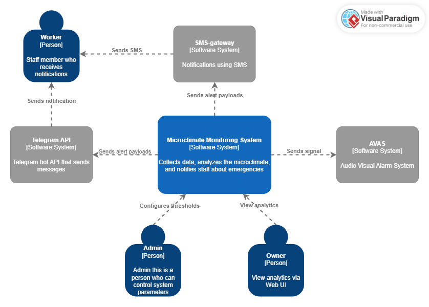
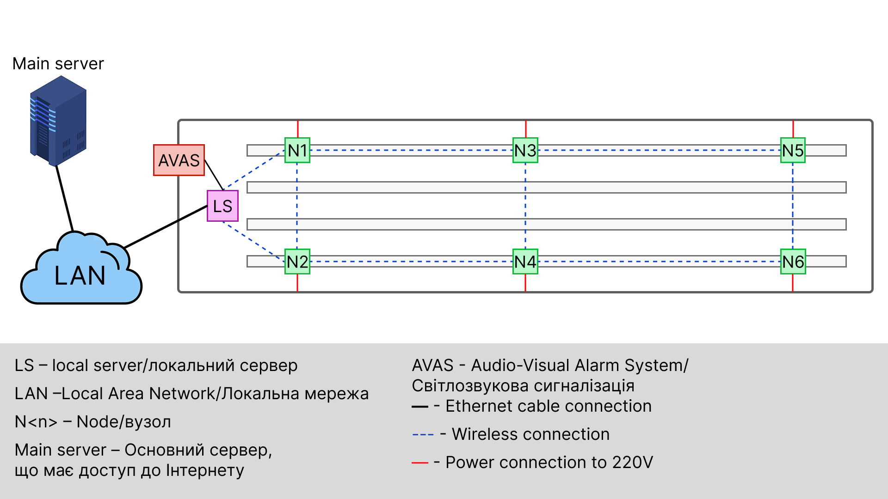
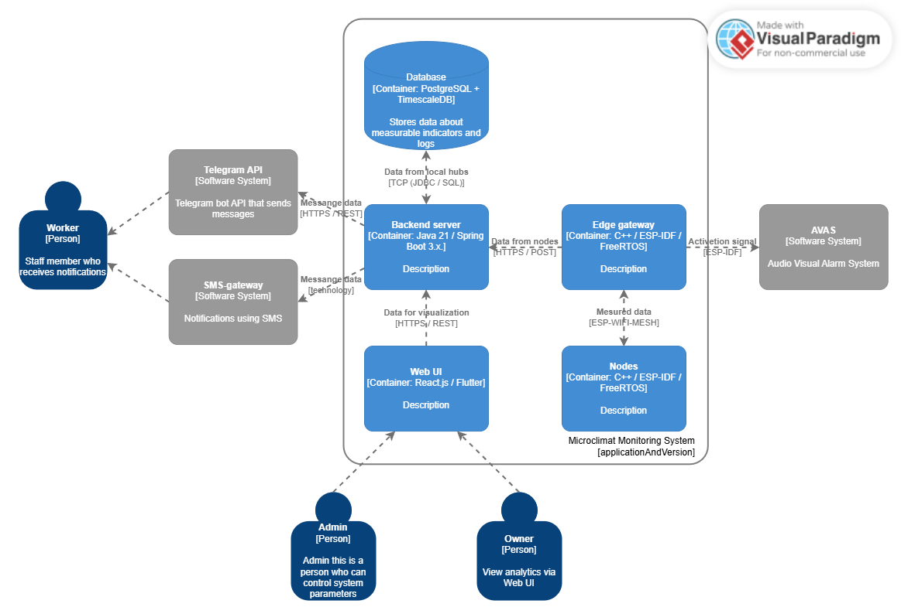

Відказостійка система моніторингу мікроклімату птахоферми
Fault-Tolerant Microclimate Monitoring System for Poultry Farms
Короткий опис: Розробка 3-рівневої IoT-системи на базі ESP32 та MESH-мережі для агресивних середовищ. Забезпечує безперервний збір телеметрії (T, H, CO2) та апаратну активацію тривоги (AVAS) при втраті зв'язку.
Ключові слова: IoT, ESP32, FreeRTOS, Spring Boot, MESH-мережа, PostgreSQL, LiFePO4, Fail-Safe.
Мета дослідження та Основні завдання
Мета дослідження: Розробити модульну, відказостійку інтелектуальну систему моніторингу параметрів мікроклімату у тваринницьких приміщеннях з високою концентрацією аміаку для підвищення ефективності виробництва та зменшення ризиків втрати поголів'я.
Основні завдання:
- Синтез 3-рівневої архітектури: мережа вимірювальних вузлів (Nodes), локальний шлюз (LS) та головний сервер (Main Server) з Web UI.
- Розробка самоорганізуючої бездротової MESH-мережі для обміну даними між вузлами (N1-N6) всередині ангара.
- Імплементація локальної буферизації даних у Flash-пам'яті (до 14 днів) та на SD-карті Шлюзу для унеможливлення втрати телеметрії при розриві з'єднання.
- Реалізація дворівневої логіки тривог (Warning / Critical) та сповіщень через інтеграцію з Telegram Bot API та SMS-шлюзом.
- Забезпечення енергетичної автономності вузлів за допомогою джерел безперебійного живлення на базі LiFePO4 акумуляторів.
Архітектура та Об'єкт дослідження
Система жорстко розділяє функціональні (FR) та нефункціональні (NFR) вимоги. Апаратна логіка базується на промислових зондах з інтерфейсом RS485 та контролерах ESP32-WROOM/WROVER.
Контекстна взаємодія підсистем
Система має три типи користувачів з різним рівнем доступу (RBAC): Worker (отримує SMS/Telegram нотифікації), Owner (переглядає аналітику через Web UI) та Admin (конфігурує адаптивні пороги датчиків).

Топологія MESH-мережі пташника
Вимірювальні вузли N1-N6 утворюють бездротову мережу, що передає дані на локальний сервер (LS). LS через Ethernet-кабель з'єднаний з LAN-мережею. Окремим каналом керується світлозвукова сигналізація (AVAS).

Контейнерна архітектура програмного забезпечення
Програмний стек розділено на контейнери: Edge-рівень працює на C++ (ESP-IDF, FreeRTOS). Backend-сервер побудовано на Java 21 / Spring Boot 3.x. Для зберігання часових рядів метрик використовується PostgreSQL з розширенням TimescaleDB. Клієнтський Web UI інтерфейс розроблено на React.js / Flutter.

Очікувані результати
Проект забезпечить безперервний збір телеметрії з гарантованою 99.99% доступністю. Використання Fail-Safe реле (Normally Closed) для AVAS виключить ймовірність "тихих відмов", а шифрування каналів (TLS) захистить дані від підміни. Результатом є повністю автономний прототип, готовий до промислової експлуатації.
Контактна інформація
Студент-розробник: Савченко Максим Олександрович
Email: maxasavajob@gmail.com
Науковий керівник: Боровик В.О.
Університет: Сумський державний університет